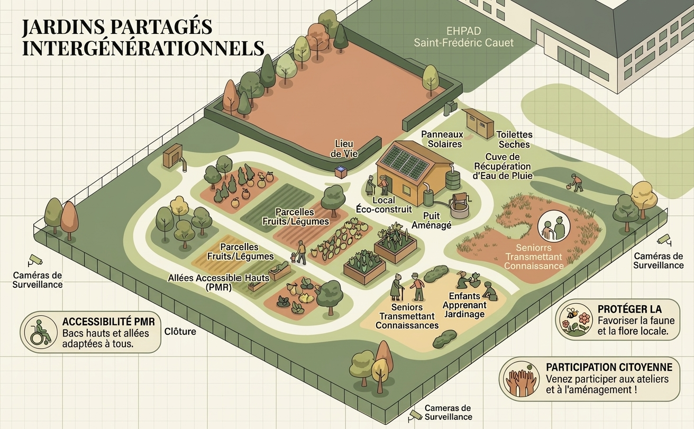
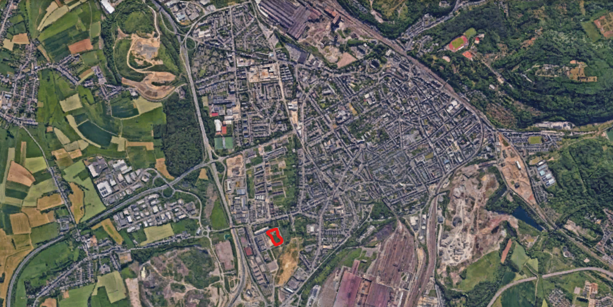
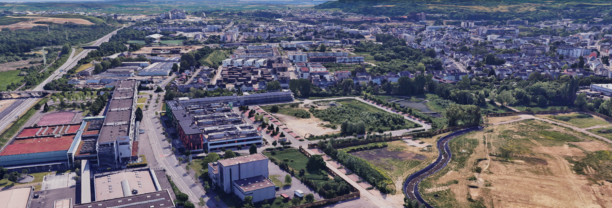
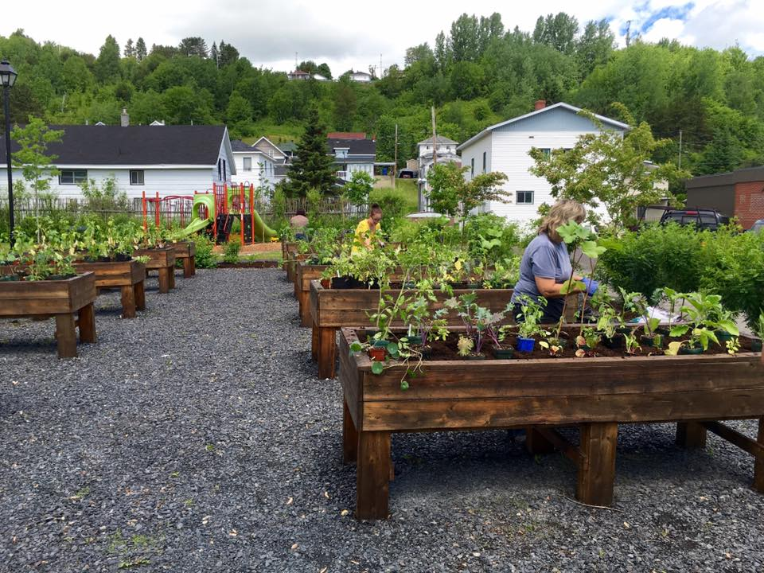
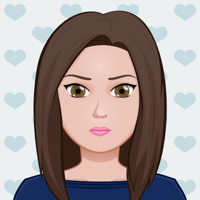

Un jardin, mille histoires à partager. Un projet intergénérationnel visant à transformer une friche communale en un lieu de transmission, de biodiversité et de solidarité.
Visualiser le projetde friche valorisée
Ouverture prévue (Mai)
Accessible PMR
Publics bénéficiaires
Répondre au manque de liens intergénérationnels sur le territoire.
Permettre aux seniors de transmettre leurs savoir-faire aux jeunes générations à travers le jardinage et les ateliers.
Sensibiliser les habitants à la nature, aux cycles du vivant et aux pratiques écologiques.
Créer un lieu fédérateur favorisant les rencontres, les échanges et l'engagement citoyen.
Découvrez la modélisation et la localisation de la parcelle retenue.



Faire pousser bien plus que des légumes.
Maintien de l'activité cognitive, Proximité avec l'EHPAD Saint-Frédéric Cauet, transmission des savoirs horticoles et lutte contre l'isolement.
Découverte du jardinage, apprentissage écologique pour les écoliers de Gizac et reconnexion à la nature.
Organisation d'événements, animation locale et dynamisation du territoire.
Chantiers solidaires, chantiers citoyen jeunesse et accompagnement vers l'emploi.

Études techniques approfondies, analyses de sol, accessibilité et viabilité.
Viabilisation initiale, clôture anti-intrusion, réseaux et rampes d'accès PMR.
Ateliers participatifs intergénérationnels, rédaction de la charte citoyenne de co-usage.
Grande inauguration festive, ateliers pédagogiques de rentrée et mise en place des premiers semis.

Coordinatrice au CCAS
Pilotage de la transition sociale & cohésion
Responsable Espaces Verts
Ingénierie technique végétale & sol
Coordinateur Petite Enfance
Intégration pédagogique & ateliers jeunesse
Responsable Service EHPAD
Coordination seniors, mobilité & activités
Habitants, associations, écoles, bénévoles ou partenaires : ensemble, cultivons le lien social et la biodiversité.
Participer au projet